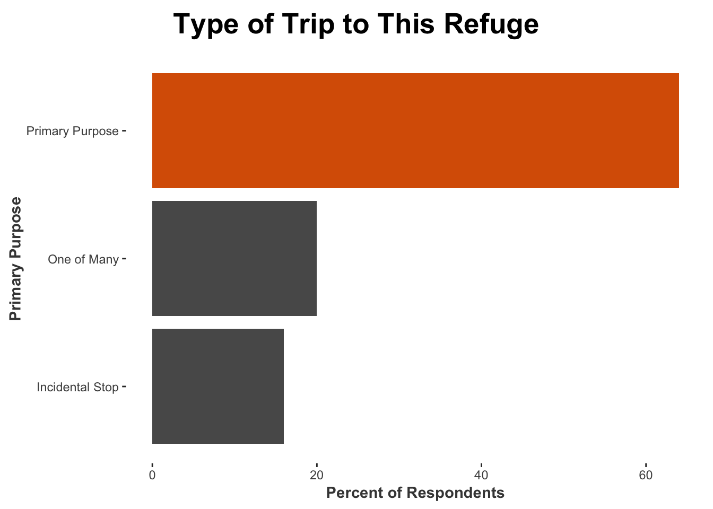

Trip Characteristics
```
Helpfulness of Information Sources
Among all visitors, the following information sources were most frequently rated as very or extremely helpful:
- Personal knowledge from previous visits (86%)
- Refuge employees or volunteers (73%)
- Kiosks/displays/exhibits at this refuge (68%)
Visitors under the age of 35 most often used these information sources to learn about the refuge:
- Personal knowledge from previous visits (81%)
- Web-based map (70%)
- Refuge employees or volunteers (66%)
Visitors over the age of 35 most often used these information sources to learn about the refuge:
- Personal knowledge from previous visits (87%)
- Refuge employees or volunteers (74%)
- Kiosks/displays/exhibits at this refuge (68%)
Participation in Outdoor Activities
Quality recreational experiences on refuges provide opportunities for visitors to connect with nature and the outdoors. Specifically, wildlife-dependent recreation, such as hunting, fishing, wildlife observation or photography, environmental education, and interpretation, can increase visitor appreciation and knowledge of natural resources (U.S. Fish and Wildlife Service 2011). The survey collected data on recreation participation at this refuge during the past 12 months and the primary activity of each visitor when they were contacted about the survey. Understanding recreation participation can help to guide the allocation of resources, including staff and infrastructure, to ensure visitors have quality, memorable experiences. Understanding visitor uses of the refuge can also aid in developing programs that facilitate meaningful interactions between visitors and refuge staff. Finally, such information can also help to pinpoint locations on the refuge where potential interactions over refuge uses may be perceived as incompatible by different visitor groups. Anticipating and preventing any social conflicts over refuge use can help create a quality experience and foster personal and emotional connections to the refuge and its resources (U.S. Fish and Wildlife Service 2011).
The most frequently participated in activities for all visitors were Hiking/Walking (29% of respondents), followed by Bird watching (17% of respondents). The primary activities reported at this refuge included:
- Hiking/Walking (29%)
- Bird watching (17%)
- Wildlife observation (14%)
Figure .: Primary activities
Refuge visitors were asked about twenty different activities they may have participated in at this refuge during the 12 months prior to completing the survey as well as the primary activity they participated in during this visit. Frequencies of all twenty activities are included in (AppendixB).
- Wildlife observation (74%)
- Hiking/Walking (68%)
- Bird watching (57%)
Refuge visitors were also given the opportunity to write-in other activities if they were not included in the list of twenty activities. The full list of ‘other reported activities are included in (AppendixC). Some of the unique activities reported at this refuge included:
- Wildlife observation (74%)
- Hiking/Walking (68%)
- Bird watching (57%)
Visiting This Refuge
Trip to This Refuge
Visitor trip characteristics include:
Trip Purpose

Group Size
DONUT– % ADULT ONLY, %ADULT/KID MIXED
OR
BAR CHART WITH GROUP SIZE—SOLO, SMALL, MED, LARGE; MAYBE COMBINE??
Visits to other national wildlife refuges
In the last 12 months, how many times have you visited other national wildlife refuges?
- 77% of visitors did not visit any other national wildlife refuges in the last 12 months
- 21% of visitors visited other national wildlife refuges only once in the last 12 months
- 25% of visitors visited other national wildlife refuges two times in the last 12 months
Visits to other public lands
In the last 12 months, how many times have you visited other public lands (for example, national or state parks) to participate in the same primary activity as this visit?
- 30% of visitors did not visit any other public lands
- 9% of visitors visited other public lands only once
- 15% of visitors visited other public lands two times